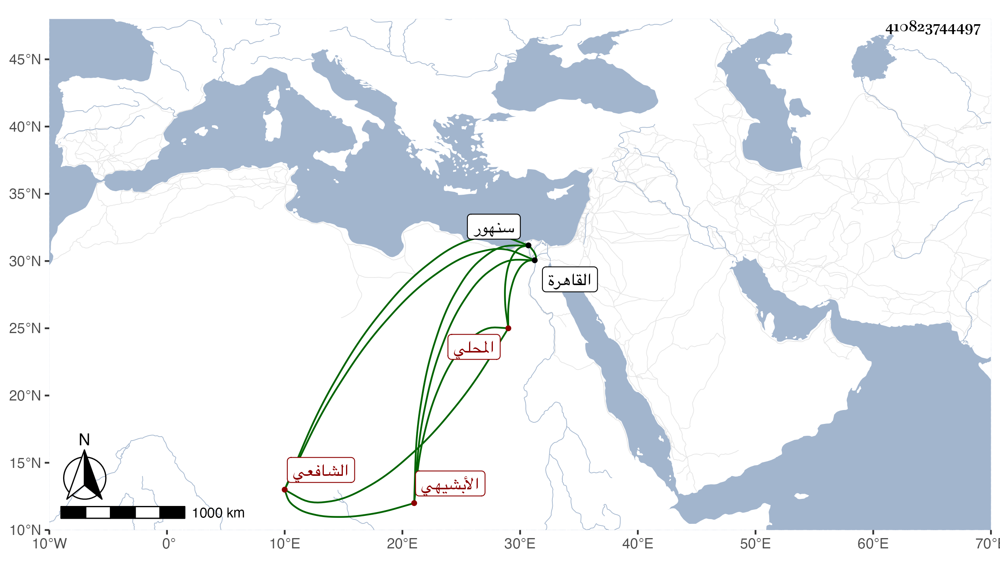

0902Sakhawi.DawLamic.ITO20230111-ara1.EIS1600.410823744497
Biography ID: 410823744497
237
محمد بن أحمد بن منصور بن أحمد بن عيسى البهاء أبو الفتح بن الشهاب أبي العباس الأبشيهي المحلي الشافعي والد أبي النجا محمد الآتي . ولد سنة تسعين وسبعمائة بأبشويه . وحفظ بها القرآن وصلى به وهو ابن عشر ثم التبريزي في الفقه والمحلة في النحو وعرضهما على الشهاب الطلياوي نزيل النحرارية وغيره ، وحج سنة أربع عشرة ودخل القاهرة غير مرة وسمع بها دروس الجلال البلقيني وولي خطابة بلده بعد والده وتعانى النظم والتصنيف في الأدب وغيره ولكنه لعدم إلمامه بشيء من النحو يقع فيه وفي كلامه اللحن كثيرا . ومن تصانيفه المستطرف من كل فن مستظرف في جزءين كبار وأطواف الأزهار على صدور الأنهار في الوعظ في مجلدين وشرع في كتاب في صنعة الترسل والكتابة وتطارح مع الأدباء ، ولقيه ابن فهد والبقاعي في سنة ثمان وثلاثين بالمحلة وكتبا عنه قوله وقد عمل العلم البلقيني ميعادا بالنحرارية إذ كان قاضي سنهور عن أخيه :
| وعظ الأنام إمامنا الحبر الذي | سكب العلوم كبحر فضل طافح |
| فشفى القلوب بعلمه وبوعظه | والوعظ لا يشفي سوى من صالح |
مات بعد الخمسين قريبا من قتل أخي الأستادار .
